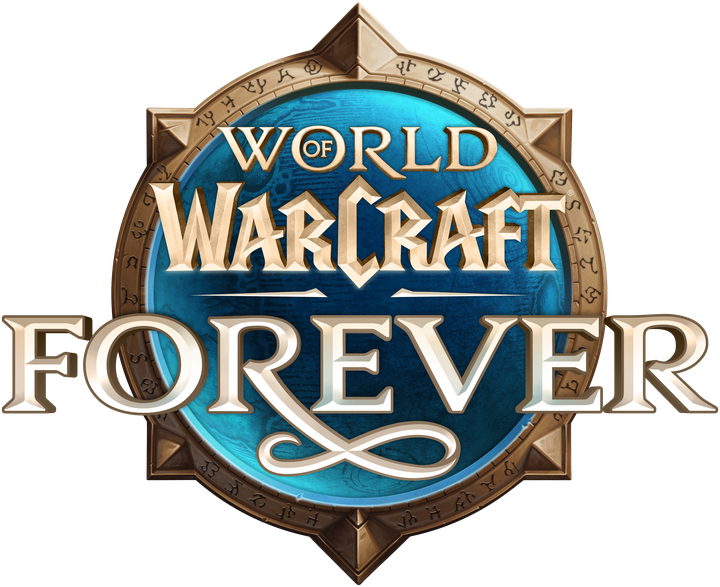
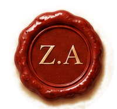

Crônicas de Azeroth
Do Império Negro dos Deuses Antigos até a manhã em que os aventureiros de WoW Forever pisam o mundo pela primeira vez.
Ao leitor destas páginas
Sou Zeugades Anchoze, da Guilda Seguidores do leão, paladino da Ordem da Mão de Prata, e há anos acompanho as caravanas da Liga dos Exploradores por ruínas, criptas e desertos. Eles cavam a terra; eu velo por eles e, à noite, junto ao fogo, escrevo o que suas pás revelam.
O que segue é a história do nosso mundo tal como a Liga conseguiu reconstruí-la: das eras em que só os Deuses Antigos sussurravam sob a pedra até os dias de hoje, quando Thrall governa em Orgrimmar, a Dama Sombria reina sob Lordaeron e uma coroa de gelo pesa sobre a Nortúndria.
As datas mais antigas são estimativas dos nossos estudiosos. Contamos os anos a partir da abertura do Portal Negro, o ano zero de tantas desgraças. Onde a pedra calou, preferimos a honestidade à invenção.
Leia com calma, Jogador. Quando chegar à última página, a próxima linha será escrita por você.

Como ler as datas: a.P. = anos antes da abertura do Portal Negro · Ano X = anos depois dela · ≈ = data aproximada pelos estudiosos da Liga.
A vez dos aventureiros
Aqui terminam as anotações da Liga e começa a sua história. Depois das guerras, das traições e dos sacrifícios, Azeroth respira por um instante. Mas, sob a Montanha Rocha Negra, o Senhor do Fogo ainda arde, e ninguém ainda ousou descer ao Núcleo Derretido.
Guardo a pena e deixo uma página em branco. Que o que você escrever nela honre os que vieram antes.— Zeugades Anchoze, em nome da Liga dos Exploradores